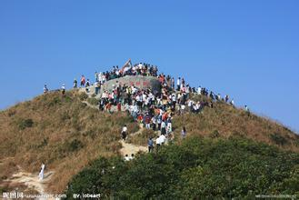

2月25日下午，校长谢和平院士会见了来访的国务院参事室主任、党组书记陈进玉一行。常务副校长李虹教授，副校长石坚教授，党办、江安管委会有关负责人陪同会见。
陈进玉同志在谢和平校长的陪同下参观了江安校区历史文化长廊、图书馆、明远湖等处。参观过程中，谢和平校长就学校历史沿革、江安校区发展，校园文化建设等方面的情况向客人做了简要介绍。陈进玉同志对我校近年来的快速发展表示肯定，对我校新校区的规划建设表示赞赏。
随后，谢和平校长在华西校区会议室与国务院参事室主任、党组书记陈进玉一行进行了会谈。双方就华西医院建设、本科人才培养、灾后重建等问题深入交换了意见。